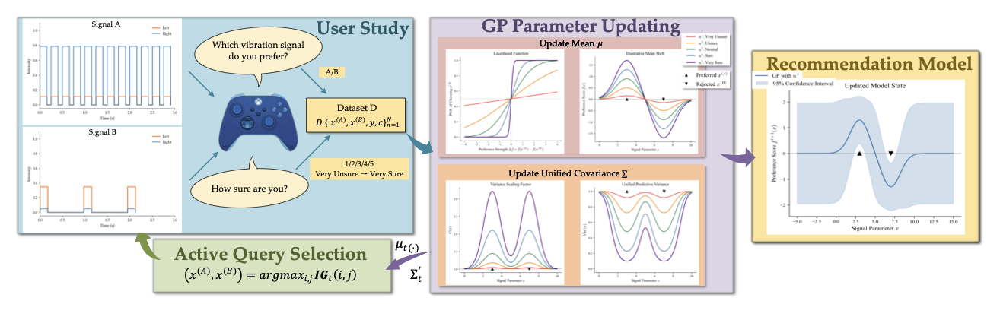
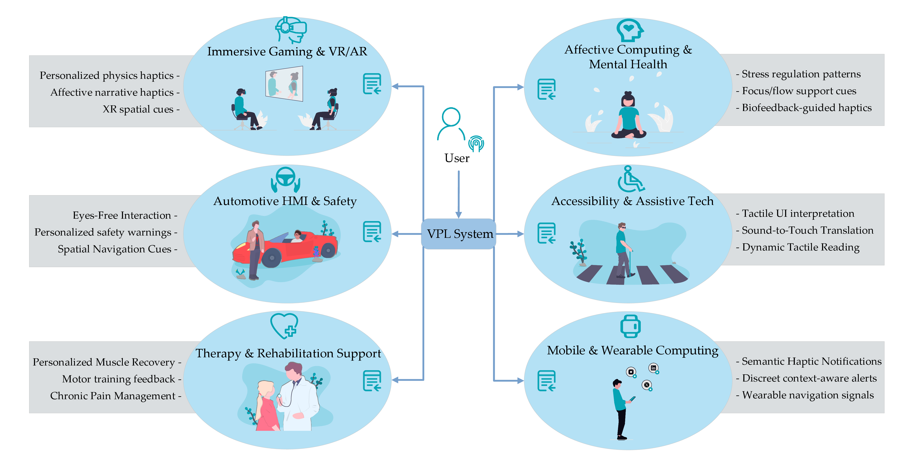

Vibrotactile Preference Learning: Uncertainty-Aware Preference Learning for Personalized Vibration Feedback

Abstract
Individual differences in vibrotactile perception make personalization increasingly important as haptic feedback becomes more prevalent in interactive systems. We propose Vibrotactile Preference Learning (VPL), a confidence-aware preference learning framework that uses Gaussian-process-based preference modeling, expected information gain for active query selection, and user-reported uncertainty to efficiently personalize vibration feedback. In a user study with vibrotactile signals on a Microsoft Xbox controller, VPL learns individualized preferences within 40 pairwise comparisons while maintaining comfortable, low-workload interaction.
Personalizing vibration feedback is difficult because tactile preferences vary substantially across users, while absolute rating interfaces are tiring, unstable, and hard to calibrate over long sessions. This paper introduces Vibrotactile Preference Learning (VPL), an interactive system that learns a user’s preferred vibration signal from pairwise A/B comparisons instead of numeric ratings.
VPL combines three ideas:
- Pairwise preference learning to reduce rating drift and cognitive burden.
- Confidence-aware modeling so that uncertain user judgments are weighted differently from confident ones.
- Active query selection based on expected information gain to make each comparison maximally useful.
The system is implemented on a Microsoft Xbox controller and searches over a four-dimensional vibrotactile parameter space. After each comparison, the model updates its estimate of the user’s latent preference function and selects the next most informative pair to present.
System Overview

The interface presents two candidate vibration signals, asks the user which one they prefer, and also asks how certain they are about that choice. These responses update a Gaussian process preference model, which is then used to propose the next comparison and eventually recommend a personalized vibration signal.
Why This Matters
Most practical haptic systems still rely on fixed vibration presets or manual slider tuning. That is problematic because users differ in perception, comfort, and preference, and many non-expert users do not understand parameters such as intensity or rhythm well enough to tune them directly.
VPL reframes personalization as a short interactive learning process. Instead of asking users to search a high-dimensional design space themselves, the system guides them through a bounded set of comparisons and automatically infers a personalized solution.
Potential Applications

The paper highlights several application settings where personalized vibrotactile feedback could be valuable, including VR and AR interaction, affective haptics, accessibility, mobile and wearable notifications, rehabilitation, and automotive interfaces. In each of these settings, the key challenge is the same: a fixed vibration pattern may not produce the intended user experience across different people, contexts, or tasks.
Main Contributions
- A confidence-aware Gaussian process preference model for learning personalized vibrotactile utility functions.
- An information-gain-based active querying strategy that improves data efficiency under a limited interaction budget.
- A user study with 13 participants showing that the method can produce satisfying personalized recommendations within 40 comparisons.
{kind=link}